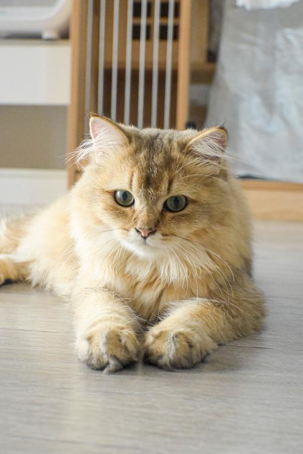
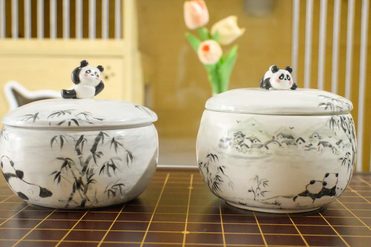
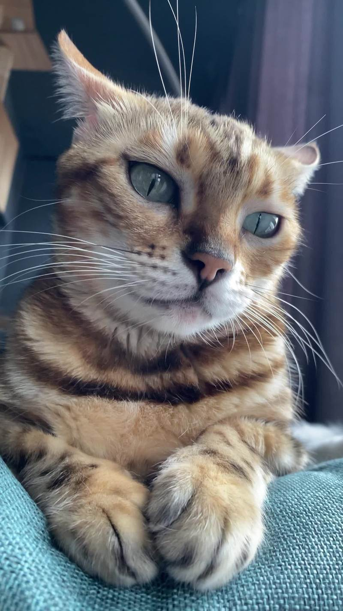

搜索并下载的猫咪美图 | 更新时间: 2026年3月14日

来源: 百度图片搜索
尺寸: 500 × 750 像素

来源: 百度图片搜索
尺寸: 750 × 500 像素

来源: 百度图片搜索
尺寸: 800 × 1422 像素
高质量版本
所有图片已成功下载到本地 images/ 目录中。
下载的图片文件:
cat_image.jpg - 标准尺寸猫咪图片cat_image2.jpg - 横向猫咪图片cat_high_quality.jpg - 高清猫咪图片搜索关键词: "猫咪"
搜索来源: 百度图片